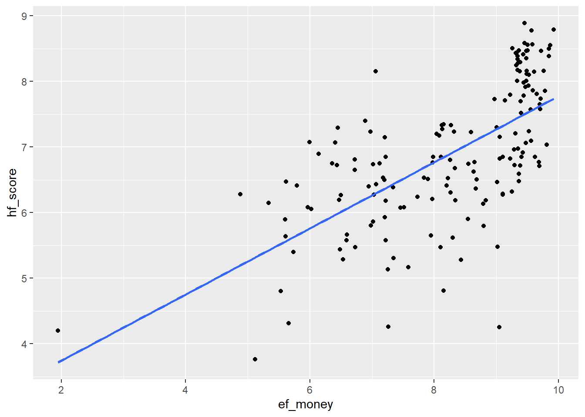
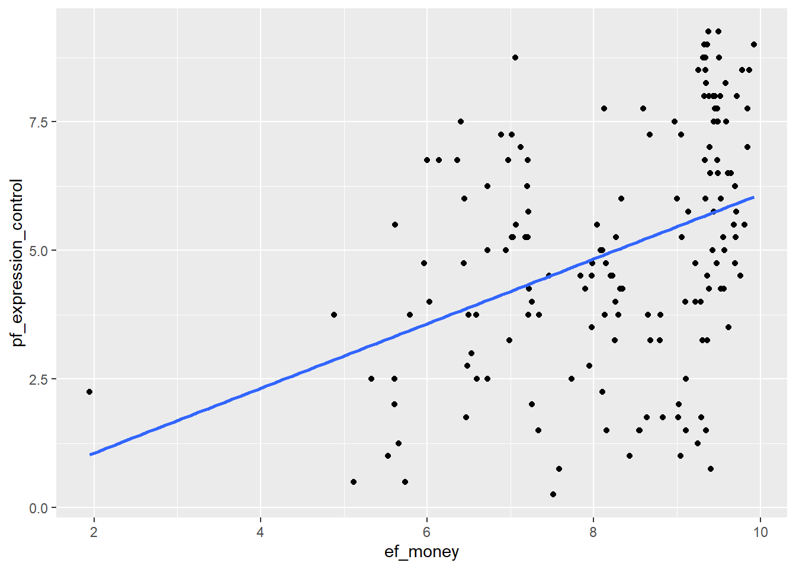

Last updated: 2021-03-03
Checks: 7 0
Knit directory: Assignment/
This reproducible R Markdown analysis was created with workflowr (version 1.6.2). The Checks tab describes the reproducibility checks that were applied when the results were created. The Past versions tab lists the development history.
Great! Since the R Markdown file has been committed to the Git repository, you know the exact version of the code that produced these results.
Great job! The global environment was empty. Objects defined in the global environment can affect the analysis in your R Markdown file in unknown ways. For reproduciblity it’s best to always run the code in an empty environment.
The command set.seed(20210223) was run prior to running the code in the R Markdown file. Setting a seed ensures that any results that rely on randomness, e.g. subsampling or permutations, are reproducible.
Great job! Recording the operating system, R version, and package versions is critical for reproducibility.
Nice! There were no cached chunks for this analysis, so you can be confident that you successfully produced the results during this run.
Great job! Using relative paths to the files within your workflowr project makes it easier to run your code on other machines.
Great! You are using Git for version control. Tracking code development and connecting the code version to the results is critical for reproducibility.
The results in this page were generated with repository version d08027a. See the Past versions tab to see a history of the changes made to the R Markdown and HTML files.
Note that you need to be careful to ensure that all relevant files for the analysis have been committed to Git prior to generating the results (you can use wflow_publish or wflow_git_commit). workflowr only checks the R Markdown file, but you know if there are other scripts or data files that it depends on. Below is the status of the Git repository when the results were generated:
Ignored files:
Ignored: .Rproj.user/
Note that any generated files, e.g. HTML, png, CSS, etc., are not included in this status report because it is ok for generated content to have uncommitted changes.
These are the previous versions of the repository in which changes were made to the R Markdown (analysis/Exercises.Rmd) and HTML (docs/Exercises.html) files. If you’ve configured a remote Git repository (see ?wflow_git_remote), click on the hyperlinks in the table below to view the files as they were in that past version.
| File | Version | Author | Date | Message |
|---|---|---|---|---|
| Rmd | d08027a | lisanechyporenko | 2021-03-03 | wflow_publish(“analysis/Exercises.Rmd”) |
| html | af938bf | lisanechyporenko | 2021-03-03 | Build site. |
| Rmd | 19e3649 | lisanechyporenko | 2021-03-03 | wflow_publish(“analysis/Exercises.Rmd”) |
| html | 245607e | lisanechyporenko | 2021-03-03 | Build site. |
| html | 2c51087 | lisanechyporenko | 2021-02-23 | Build site. |
| Rmd | 396ba4f | lisanechyporenko | 2021-02-23 | wflow_publish(files = c(“analysis/index.Rmd”, “analysis/license.RMd”, |
7. Use the hfi dataset from the openintro package
library(tidyverse)
library(openintro)
library(broom)
data(hfi)hfi_2016 <- hfi %>%
filter(year == 2016)8. Fit a new model that uses ef_money or monetary measure to predict hf_score. What does the slope tell us in the context of the relationship between human freedom and the economy in the country?
p <- hfi_2016 %>% ggplot(aes(ef_money,hf_score))
p + geom_point() + geom_smooth(method = "lm", se = FALSE)`geom_smooth()` using formula 'y ~ x'
m1 <- lm(hf_score ~ ef_money, data = hfi_2016)
tidy(m1)# A tibble: 2 x 5
term estimate std.error statistic p.value
<chr> <dbl> <dbl> <dbl> <dbl>
1 (Intercept) 2.74 0.387 7.07 4.56e-11
2 ef_money 0.504 0.0463 10.9 5.50e-21The slope indicates that that human freedom is highly associated with a better economy.
5. Again add region to the model from Q4. Compare the slope and \(R^2\) with the model from Q4.
m1_reg <- lm(hf_score ~ ef_money + region, data = hfi_2016)
tidy(m1_reg)# A tibble: 11 x 5
term estimate std.error statistic p.value
<chr> <dbl> <dbl> <dbl> <dbl>
1 (Intercept) 3.56 0.393 9.05 6.77e-16
2 ef_money 0.364 0.0361 10.1 1.26e-18
3 regionEast Asia 0.873 0.326 2.67 8.32e- 3
4 regionEastern Europe 0.829 0.260 3.19 1.73e- 3
5 regionLatin America & the Caribbean 0.415 0.257 1.62 1.08e- 1
6 regionMiddle East & North Africa -0.793 0.265 -2.99 3.25e- 3
7 regionNorth America 1.38 0.462 3.00 3.21e- 3
8 regionOceania 1.43 0.366 3.92 1.33e- 4
9 regionSouth Asia 0.0879 0.271 0.325 7.46e- 1
10 regionSub-Saharan Africa -0.0174 0.251 -0.0692 9.45e- 1
11 regionWestern Europe 1.40 0.267 5.26 4.91e- 7glance(m1)# A tibble: 1 x 12
r.squared adj.r.squared sigma statistic p.value df logLik AIC BIC
<dbl> <dbl> <dbl> <dbl> <dbl> <dbl> <dbl> <dbl> <dbl>
1 0.425 0.422 0.821 118. 5.50e-21 1 -197. 400. 409.
# ... with 3 more variables: deviance <dbl>, df.residual <int>, nobs <int>glance(m1_reg)# A tibble: 1 x 12
r.squared adj.r.squared sigma statistic p.value df logLik AIC BIC
<dbl> <dbl> <dbl> <dbl> <dbl> <dbl> <dbl> <dbl> <dbl>
1 0.744 0.727 0.564 43.8 1.09e-39 10 -131. 287. 324.
# ... with 3 more variables: deviance <dbl>, df.residual <int>, nobs <int>The slope decreases from 0.504 to 0.364, but \(R^2\) increases from 0.425 to 0.744. Region is therefore a confounder for economy.
6. Finally fit a model with ef_money and pf_expression_control as exposures and hf_score as outcome. Compare the slope and \(R^2\) from the models from Q1. Could ef_money be a confounder?
m2 <- lm(hf_score ~ ef_money + pf_expression_control, data = hfi_2016)
tidy(m2)# A tibble: 3 x 5
term estimate std.error statistic p.value
<chr> <dbl> <dbl> <dbl> <dbl>
1 (Intercept) 2.79 0.244 11.5 1.38e-22
2 ef_money 0.318 0.0315 10.1 7.74e-19
3 pf_expression_control 0.296 0.0189 15.7 4.68e-34glance(m2)# A tibble: 1 x 12
r.squared adj.r.squared sigma statistic p.value df logLik AIC BIC
<dbl> <dbl> <dbl> <dbl> <dbl> <dbl> <dbl> <dbl> <dbl>
1 0.774 0.771 0.516 272. 4.38e-52 2 -121. 251. 263.
# ... with 3 more variables: deviance <dbl>, df.residual <int>, nobs <int>The slope stays quite similar (0.37 without and 0.32 with ef_money), but \(R^2\) increases (from 0.62 to 0.774). That means that ef_money is not a confounder.
7. Use a linear regression model (and scatter plot) with ef_money as exposure and pf_expression_control as outcome, to study whether ef_money has an association with pf_expression_control as well. This might validate our finding that ef_money is a confounder between pf_expression_control as exposure and hf_score as outcome from Q6.
p <- hfi_2016 %>% ggplot(aes(ef_money,pf_expression_control))
p + geom_point() + geom_smooth(method = "lm", se = FALSE)`geom_smooth()` using formula 'y ~ x'
m3 <- lm(pf_expression_control ~ ef_money, data = hfi_2016)
tidy(m3)# A tibble: 2 x 5
term estimate std.error statistic p.value
<chr> <dbl> <dbl> <dbl> <dbl>
1 (Intercept) -0.195 1.02 -0.191 0.849
2 ef_money 0.628 0.122 5.16 0.000000722glance(m3)# A tibble: 1 x 12
r.squared adj.r.squared sigma statistic p.value df logLik AIC BIC
<dbl> <dbl> <dbl> <dbl> <dbl> <dbl> <dbl> <dbl> <dbl>
1 0.143 0.137 2.16 26.6 0.000000722 1 -354. 713. 722.
# ... with 3 more variables: deviance <dbl>, df.residual <int>, nobs <int>
sessionInfo()R version 4.0.4 (2021-02-15)
Platform: x86_64-w64-mingw32/x64 (64-bit)
Running under: Windows 10 x64 (build 18363)
Matrix products: default
locale:
[1] LC_COLLATE=German_Germany.1252 LC_CTYPE=German_Germany.1252
[3] LC_MONETARY=German_Germany.1252 LC_NUMERIC=C
[5] LC_TIME=German_Germany.1252
attached base packages:
[1] stats graphics grDevices utils datasets methods base
other attached packages:
[1] broom_0.7.5 openintro_2.0.0 usdata_0.1.0
[4] cherryblossom_0.1.0 airports_0.1.0 forcats_0.5.1
[7] stringr_1.4.0 dplyr_1.0.4 purrr_0.3.4
[10] readr_1.4.0 tidyr_1.1.2 tibble_3.0.6
[13] ggplot2_3.3.3 tidyverse_1.3.0 workflowr_1.6.2
loaded via a namespace (and not attached):
[1] Rcpp_1.0.6 lattice_0.20-41 lubridate_1.7.9.2 ps_1.5.0
[5] assertthat_0.2.1 rprojroot_2.0.2 digest_0.6.27 utf8_1.1.4
[9] R6_2.5.0 cellranger_1.1.0 backports_1.2.1 reprex_1.0.0
[13] evaluate_0.14 highr_0.8 httr_1.4.2 pillar_1.5.0
[17] rlang_0.4.10 readxl_1.3.1 rstudioapi_0.13 whisker_0.4
[21] jquerylib_0.1.3 Matrix_1.3-2 rmarkdown_2.7 labeling_0.4.2
[25] splines_4.0.4 munsell_0.5.0 compiler_4.0.4 httpuv_1.5.5
[29] modelr_0.1.8 xfun_0.21 pkgconfig_2.0.3 mgcv_1.8-33
[33] htmltools_0.5.1.1 tidyselect_1.1.0 fansi_0.4.2 crayon_1.4.1
[37] dbplyr_2.1.0 withr_2.4.1 later_1.1.0.1 grid_4.0.4
[41] nlme_3.1-152 jsonlite_1.7.2 gtable_0.3.0 lifecycle_1.0.0
[45] DBI_1.1.1 git2r_0.28.0 magrittr_2.0.1 scales_1.1.1
[49] cli_2.3.0 stringi_1.5.3 farver_2.0.3 fs_1.5.0
[53] promises_1.2.0.1 xml2_1.3.2 bslib_0.2.4 ellipsis_0.3.1
[57] generics_0.1.0 vctrs_0.3.6 tools_4.0.4 glue_1.4.2
[61] hms_1.0.0 yaml_2.2.1 colorspace_2.0-0 rvest_0.3.6
[65] knitr_1.31 haven_2.3.1 sass_0.3.1